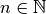
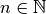
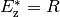
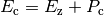
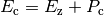
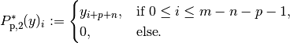

Resizing Operators¶
Introduction¶
In ODL, resizing of a discretized function is understood as the operation of shrinking or enlarging its domain in such a way that the size of the partition cells do not change.
This “constant cell size” restriction is intentional since it ensures that the underlying operation can be implemented as array resizing without resampling, thus keeping those two functionalities separate (see Resampling).
Basic setting¶
Let now  with  be the space of one-dimensional real vectors encoding values of a function defined on an interval (see Discretizations for details).
Since values are not manipulated, the generalization to complex-valued functions is straightforward.
with  be the space of one-dimensional real vectors encoding values of a function defined on an interval (see Discretizations for details).
Since values are not manipulated, the generalization to complex-valued functions is straightforward.
Restriction operator¶
We consider the space for an and define the restriction operator
(1)¶
with a given index . Its adjoint with respect to the standard inner product is easy to determine:
with the zero-padding operator
(2)¶
In practice, this means that a new zero vector of size  is created, and the values
is created, and the values  are filled in from index
are filled in from index  onwards.
It is also clear that the operator
onwards.
It is also clear that the operator  is right-invertible by , i.e. .
In fact, any operator of the form , where
is right-invertible by , i.e. .
In fact, any operator of the form , where  is linear and for acts as a right inverse for .
On the other hand, has no left inverse since it has a non-trivial kernel (null space) .
is linear and for acts as a right inverse for .
On the other hand, has no left inverse since it has a non-trivial kernel (null space) .
Extension operators¶
Now we study the opposite case of resizing, namely extending a vector.
We thus choose and consider different cases of enlarging a given vector to a vector in .
The start index is again denoted by and needs to fulfill , such that a vector of length “fits into” a vector of length  when starting at index .
when starting at index .
It should be noted that all extension operators mentioned here are of the above form with acting on the “outer” indices only.
Hence they all act as a right inverses for the restriction operator.
This property can also be read as the fact that all extension operators are left-inverted by the restriction operator .
Moreover, the “mixed” case, i.e. the combination of restriction and extension which would occur e.g. for a constant index shift , is not considered here. It can be represented by a combination of the two “pure” operations.
Zero padding¶
In this most basic padding variant, one fills the missing values in the target vector with zeros, yielding the operator
(3)¶
Note that this is the adjoint of the restriction operator defined in (1).
Hence, its adjoint is given by the restriction, .
Constant padding¶
In constant padding with constant  , the extra zeros in (3) are replaced with .
Hence, the operator performing constant padding can be written as , where the second summand is given by
, the extra zeros in (3) are replaced with .
Hence, the operator performing constant padding can be written as , where the second summand is given by
Note that this operator is not linear, and its derivative is the zero operator, hence the derivative of the constant padding operator is .
Periodic padding¶
This padding mode continues the original vector  periodically in both directions.
For reasons of practicability, at most one whole copy is allowed on both sides, which means that the numbers , and need to fulfill (“left” padding amount) and (“right” padding amount).
The periodic padding operator is then defined as
periodically in both directions.
For reasons of practicability, at most one whole copy is allowed on both sides, which means that the numbers , and need to fulfill (“left” padding amount) and (“right” padding amount).
The periodic padding operator is then defined as
(4)¶
Hence, one can at most get 3 full periods with and . Again, this operator can be written as with an operator
For the adjoint of , we calculate
with
and

In practice, this means that that besides copying the values from the indices  of a vector
of a vector  to a new vector , the values corresponding to the other indices are added to the vector as follows.
The first entries of (negative means 0) are added to the last entries of , in the same ascending order.
The last entries of are added to the first entries of , again keeping the order.
This procedure can be interpreted as “folding back” the periodized structure of into a single period by adding the values from the two side periods.
to a new vector , the values corresponding to the other indices are added to the vector as follows.
The first entries of (negative means 0) are added to the last entries of , in the same ascending order.
The last entries of are added to the first entries of , again keeping the order.
This procedure can be interpreted as “folding back” the periodized structure of into a single period by adding the values from the two side periods.
Symmetric padding¶
In symmetric padding mode, a given vector is extended by mirroring at the outmost nodes to the desired extent.
By convention, the outmost values are not repeated, and as in periodic mode, the input vector is re-used at most once on both sides.
Since the outmost values are not doubled, the numbers , and need to fulfill the relations  (“left” padding amount) and (“right” padding amount).
Now the symmetric padding operator is defined as
(“left” padding amount) and (“right” padding amount).
Now the symmetric padding operator is defined as
(5)¶
This operator is the sum of the zero-padding operator and
For its adjoint, we compute
with
and
Note that the index condition is equivalent to , hence the index range in the definition of is well-defined.
Practically, the evaluation of consists in copying the “main” part of corresponding to the indices to and updating the vector additively as follows.
The values at indices 1 to are updated with the values of mirrored at the index position , i.e. in reversed order.
The values at the indices to are updated with the values of mirrored at the position , again in reversed order.
This procedure can be interpreted as “mirroring back” the outer two parts of the vector at the indices and , adding those parts to the “main” vector.
Order 0 padding¶
Padding with order 0 consistency means continuing the vector constantly beyond its boundaries, i.e.
(6)¶
This operator is the sum of the zero-padding operator and
We calculate the adjoint of :
with the zero’th order moments
Hence, we get

with the convention that the sum of the two values is taken in the case that $n = 1$, i.e. both first cases are the same.
Hence, after constructing the restriction of a vector to the main part , the sum of the entries to the left are added to  , and the sum of the entries to the right are added to
, and the sum of the entries to the right are added to  .
.
Order 1 padding¶
In this padding mode, a given vector is continued with constant slope instead of constant value, i.e.
(7)¶
We can write this operator as  with the order-1 specific part
with the order-1 specific part
For its adjoint, we get
with the first order moments
Hence, the order-1 specific operator has the adjoint
with the convention of summing values for overlapping cases, i.e. if .
In practice, the adjoint for the order 1 padding case is applied by computing the zero’th and first order moments of and adding them to the two outmost entries of according to the above rule.
Generalization to arbitrary dimension¶
Fortunately, all operations are completely separable with respect to (coordinate) axes, i.e. resizing in higher-dimensional spaces can be written as a series of one-dimensional resizing operations. One particular issue should be mentioned with the extension operators and their adjoints, though. When extending a small, e.g., two-dimensional array to a larger size, there is an ambiguity in how the corner blocks should be handled. One possibility would be use the small array size for the extension in both axes, which would leave the corner blocks untouched (initialized to 0 usually):

However, this is not the behavior one would often want in practice. Instead, it is much more reasonable to also fill the corners in the same way the “inner” parts have been extended:

This latter behavior is implemented in the resizing operators in ODL.
The adjoint operators of these “corner-filling” resizing operator are given by reversing the unfolding pattern, i.e. by “folding in” the large array axis by axis according to the adjoint formula for the given padding mode. This way, the corners also contribute to the final result, which leads to the correct adjoint of the 2D resizing operator. Of course, the same principle can easily be generalized to arbitrary dimension.